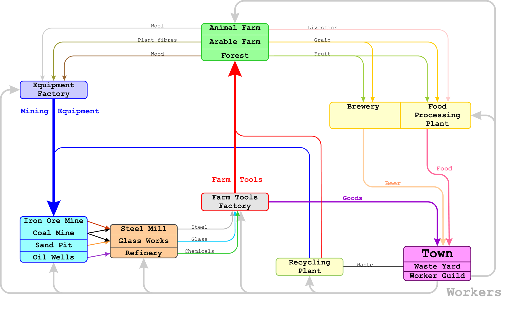
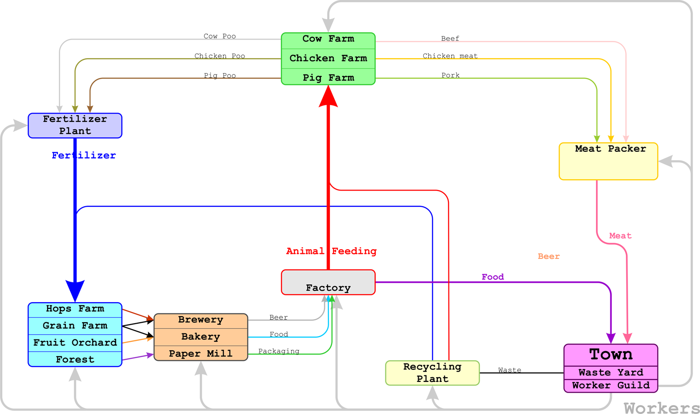

Next on the list: industries!
It has been a while since I have posted and early development article of NUTS and now is the time when I am starting another newGRF project – new industries. It all started as I was trying to find some ways how to improve FIRS, but the required changes would be way too major so it is better off to make a separate newGRF. In this article I am going to present to you the ideas that I have gotten so far, and how is the core of the set going to work and of course I am going to explain why.
P.S. if you have any nice ideas about the newGRF name, please do not hesitate to throw them at me 😉

The scheme
Here goes the cargo scheme of the set, showing the structure how it should work.

Updates:
1. turning it into farming mayhem so the chains make a lot more sense now. 

Core idea
The main engine powering the whole set is a concept of some triangle of three groups of industries. These being Mining industries, Farming industries and Towns.
These groups are greatly dependent on one another as for example to make Mining primary industry grow (coal mine for example) , you will need to bring supplies from other group – either Farms or Towns. Exactly the same applies for farming industries, and a Town requires food and goods made by farming/mining industry chains to grow, output more workers and supplies.
Supplies
The main force which makes you attempt to connect a lot of different industries are the supplies. There are a few kinds of supplies in general – Mining primaries need Equipment, Farming primaries need Farming Tools, and towns need goods/food to grow.
And then there are workers supplying cargo. When you deliver the appropriate supplies, the production starts to have a chance for increasing. However to make it more interesting, towns can have a major impact on industries, too. That is realized by having a third supplying cargo – workers. Workers are the working force that you transport from a special town industry – Worker Yard, to any other industry on the map. Primary industries increase their production a lot more if they have both workers and appropriate supplies, while secondary industries output their product at a better rate to the delivered raw cargoes.
I am also considering that you would not only transport workers to the industries, but also from the industries back to their Worker Yard. The industries would „process“ the workers over some short period of time, and then they would be normally „produced“ by the industry again. In the long run, the simpliest method how to deal with that would be to just have trains unload workers and load some that are available for the trip back home. These workers would be 2 separate cargoes – like fresh workers and tired workers.
Industry mechanics
The general way how industries produce is going to be basically the same as original industries have, and possible production increase is going to be very similarly fast, too.
When a raw cargo is delivered to a producing industry, it should be processed instantly like the original industries do. However because all industries accept more than one cargo, the product output is going to differe based on how many different kinds of cargoes have you delivered. This is to encourage using as many industry chains as possible.
Industries will definitely not have anything like stockpiles, or requirements for a certain ratio of delivered raw cargoes to them.
Other details
There is a whole lot more details to cover and to talk about, but they are mostly a lot less important, and a lot more likely to change in development, so I do not mention too much else at least just yet. I for example am thinking about reducing the maximum production rate to about 1000 units per industry, or some other changes to the way how industries work.
Cargo chains
The scheme in the header of the article is basically just a systematic sketch how should the industry chains work. However it is very likely that the names/labels of some industries could change. For example it might not make too much sense to have fibre crops -> equipment. The name or actual cargo could change, and that is exactly what I would like to ask if you want to help me with.
I have following suggestions:
Plantation -> rubber and fruit (does not quite fit in arctic/temperate I guess)
Farm -> oil seeds and grain (oil seeds -> equipment is strange and at the same time oil seeds and grain are optically very similar probably)
I am also seeking for other chains, like mine -> something -> factory, ideally so that it could mix with refinery/oil or something else.
Basically, the task is to replace cargo names with something that would make some good sense.
After all, what makes sense and what does not is what you can probably tell on your own. 😛 Please, if you have any ideas to improve some parts of the chains or redo whole chains or even all of the industries (as long as it keeps the systematic structure), please let me know. 🙂
It is not so simple because I need some industry that makes two products – one going to food plant, one going to equipment plant. At the same time the industry should be farm-type – that means it accepts farm supplies. The reason to have two cargoes produced is to make the industry always useful, and encourage using the other chain direction as well. The mining chain does that split at the final factory instead.
Generally I was trying to keep within the bounds of using the cargoes that are already defined, but if your suggestion is not from that list, we could add some new cargoes . All this is simply because if I defined an new cargo „rainbow elephants“, it would only work with the train sets which have rainbow elephants. I am going to fill all cargoes which would eventually be missing in NUTS, but if we stay within the defined cargoes, it is more likely to work well with other sets (or at least the sets which are adapted to work with FIRS/ECS. You can find such a cargo table here.
Conclusion
It is not so long ago I have been saying I do not intend to make an industry set … and well, here I am. With this industry set I hope to create something different from the rest, but at the same time I am not ashamed to say that I do take a lot of inspiration from the experience based on playing with other industry sets. With a similar point of view as NUTS, I would like to create an industry set where every single industry is usable, and you even have reasons to use it as your network will benefit from it in some way. An industry set which encourages to connect all industry types, including towns.
I appreciate anyone who would like to help me in any way, in such case please just contact me :P.
Thank you for reading this article and please add comments if you have any ideas or thoughts about the concept.
Categories: Community News, Gameplay, NewGrf, Public Server
KrunchyAl June 2, 2012 14:59
Feed mineral industries with workers and Steel?
V453000 June 2, 2012 15:34
That is impossible without violating the structure.
… The _something_ is a problem as it has to be produced by the other chain – farms in this case …
Absolutis June 3, 2012 18:14
What about all 3 industry chains feeding eachother (mining, animal farming, arable farming)? the farm chains could provide meals to the mining industries and the mining industries could provide farming equipment to the farming industries.
V453000 June 3, 2012 18:24
That idea would fit into the general scope of the newGRF, but:
1. meals to mines is still a bit strange (to me at least, but since workers go there it would make … some sense)
2. lately I thought it would be nice if the mineral/farm chains were rather independent. This being mainly to be able to turn one of them off, and play with just the other one, which would provide something like a halved industry newgrf. Currently, ECS and FIRS both have many industries (I think too many) so it would be nice if there was some middle option.
3. just to note, it would be four chains, not three (2 for minerals, 2 for farms). Current plan on mineral industries is something liked dividing them into two groups, just like farms are. Same scheme, different names basically.
4. I think requiring two chains to make your industry grow is just enough. Four (or 3 in this case) chains would be way too much I think and would end up being stupidly complex – not only in the start of the game but also throughout the rest.
frosch June 4, 2012 16:58
1. Beer should directly go to towns, so that together with food there are two proper cargos for the growth requirements in the subtropic climate.
2. Instead meat could go to the factory (so it would take bread, meet and packaging), while food and beer would go to town.
3. If you want a shorter chain from farm to town, I would try it with milk/cheese-stuff instead of meat-stuff.
4. There are some industries which produce multiple output cargos. Any plans on the ratio of the output? Does it depend on the input cargo ratio or just fixed?
5. About the name: “Squirrel” is already taken, so hmm… “beef” seems to be a nicely ambiguous verb/noun which might fit to a farm-heavy industry set.
Absolutis June 4, 2012 17:58
Name could also be:
MAFIOSO – Mining and Farming industries of Openttd (Sponsored by Openttdcoop)
Roysvork June 15, 2012 14:48
+1… MAFIOSO is an awesome name!
Zoltic October 4, 2012 09:10
Hello,
I was “working” on FIRS when I saw your message. I agree your conclusion about the complexity of FIRS and think that the first thing to do is to establish some simple and clear rules which can define the type of cargo for each industry.
OTTD, actually, recognize 4 types of industries : BLACKHOLE, EXTRACTIVE, ORGANIC, PROCESSING
Each “industry” can accept 3 cargos and produce 2.
It will be easier to understand (and remember) the rules if they stay close to the real life.
From this it is possible to write this kind of rules :
EXTRACTIVE industry NEED “technical supplies” (shovels, pickaxes, wheelbarrows, … ) to grow up.
ORGANIC industry NEED “organic supplies” (fertilizer, water, food for animals, ….) AND/OR “farm supplies” (tractor, plows, harvesters, …..) to grow up.
PROCESSING industries NEED 1 or 2 “raw” cargos to produce something (coal and/or iron ore to produce steel) AND 1 “manufacturing supplies” (ovens, rolling mills, …..) to grow up.
EXTRACTIVE and ORGANIC industries need more “workers” than PROCCESSING or BLACKHOLE industries.
EXTRACTIVE industry can produce coal, iron ore, wood which can be processed by “steel mills” but also potassium hydroxide which can be processed by “fertiliser plant” and/or products processed by “chemical industries” (like “oil reffinery”) to make fibres like Nylon, itself processed by “textile mills”
ORGANIC industries can produce grains, livestock processed by “food industries” but also plant fibres processed by “textile mills” and by-product (like liquid manure or straw) which can be processed by “fertiliser plant”.
A special mention for “Hotel” or “Places of interest”, they accept “tourists” and produce “passengers”.
I know, all of this is not absolutly clear nor in this post neither in my mind (yet). But…. if some rules like that are defined, it will be possible to “create” industries and cargos step by step and to be flexible about the “chains”, because PROCESSING industries could accept cargoes coming from various “chains”. I add that I studied also ECS and I must say that the system of “vectors” seems to be a very good idea for me.
Sorry for my poor english, I’m French and everybody knows that frenchies are poor “foreign speakers”.
Do not fire at the pianist, even if the music is bad.